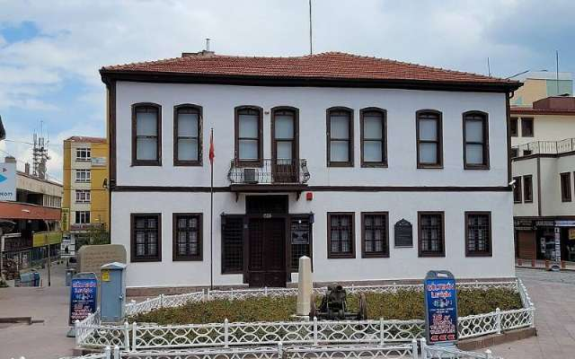
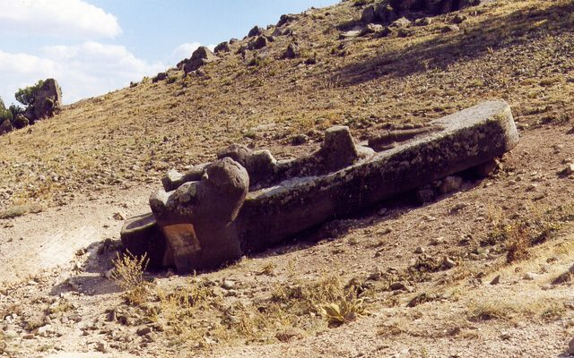

Home › Things to see, province by province › Konya
The Kültür Varlıkları guide lists 22 places in Konya: 10 museum, 7 archaeological site, 2 religious building, 2 lake, 1 castle & historic building. Below you will find the highlights, a map and the full list.
⭐ Highlights

1 · Konya · Archaeological siteÇatalhöyük Archaeological Site
Çatalhöyük, on the Konya plain, is a great Neolithic settlement and one of the most important witnesses to humanity's transition to settled, town-like life.

2 · Konya · MuseumMevlana Museum
The Mevlana Museum in Konya holds the tomb of the great mystic and poet Jalal al-Din Rumi and the lodge of his followers, the Mevlevis.

3 · Konya · MuseumAkşehir Nasreddin Hoca Arkeoloji and Ethnography Museum
The Akşehir Nasreddin Hodja Archaeology and Ethnography Museum presents the long history of Akşehir, where the world-famous humorist Nasreddin Hodja lived and is buried.
🗺 On the map
📍 All places (22)
Museum (10)
Mevlana MuseumMuseumAkşehir Nasreddin Hoca Arkeoloji and Ethnography MuseumMuseum
Batı Cephesi Karargahı MuseumMuseum Karatay (Çini Eserler) MuseumMuseum
Karatay (Çini Eserler) MuseumMuseum Konya Archaeology MuseumMuseum
Konya Archaeology MuseumMuseum Konya Atatürk House MuseumMuseum
Konya Atatürk House MuseumMuseum Konya Ethnography MuseumMuseum
Konya Ethnography MuseumMuseum Konya Panorama MuseumMuseum
Konya Panorama MuseumMuseum İzzet Koyunoğlu Şehir MuseumMuseumEreğli MuseumMuseum
İzzet Koyunoğlu Şehir MuseumMuseumEreğli MuseumMuseumArchaeological site (7)
Çatalhöyük Archaeological SiteArchaeological site · UNESCO Boncuklu MoundArchaeological site
Boncuklu MoundArchaeological site Eflatunpınar Hittite Spring SanctuaryArchaeological site
Eflatunpınar Hittite Spring SanctuaryArchaeological site
Fasıllar Monument (Hittite)Archaeological site Ancient City of KilistraArchaeological site
Ancient City of KilistraArchaeological site Kubadabad PalaceArchaeological site
Kubadabad PalaceArchaeological site Zengibar Kalesi (Isaura)Archaeological site
Zengibar Kalesi (Isaura)Archaeological site